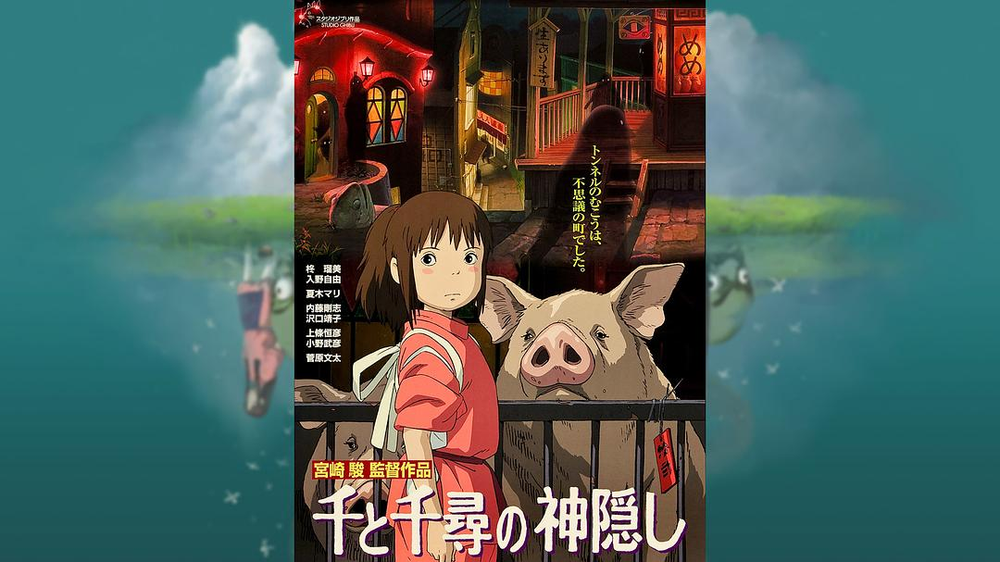
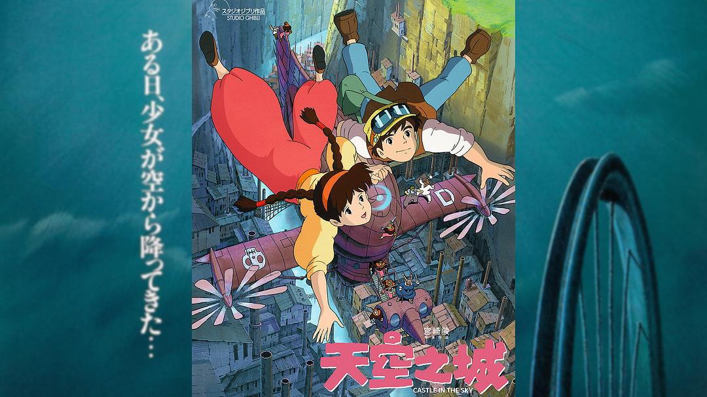
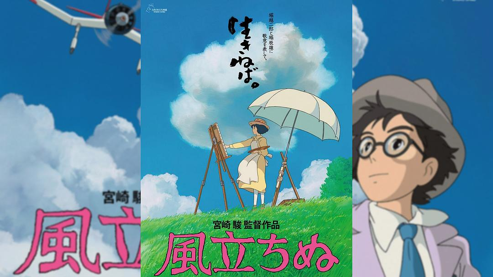
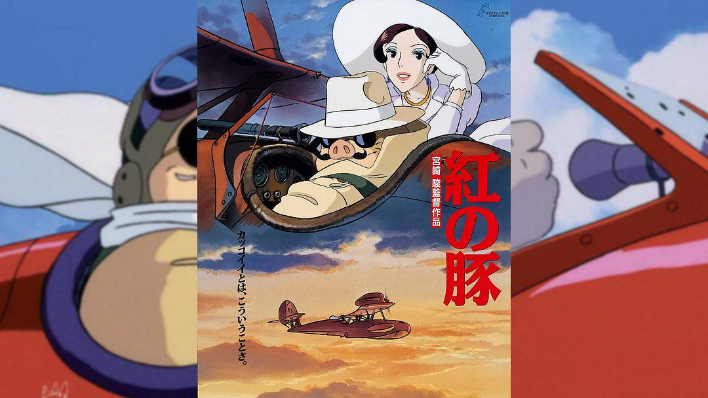
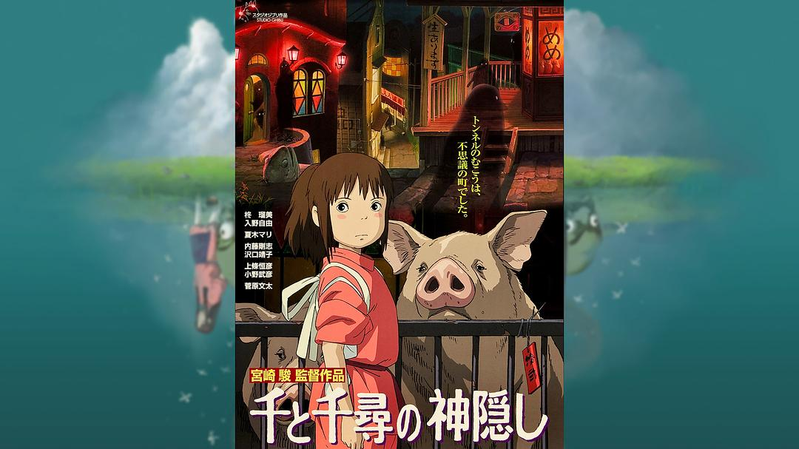
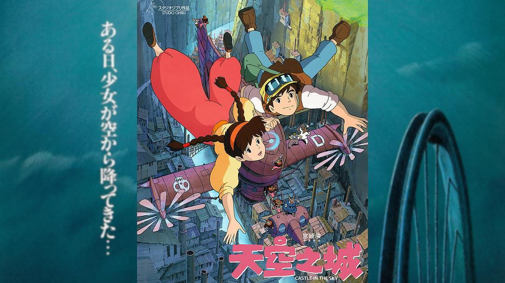
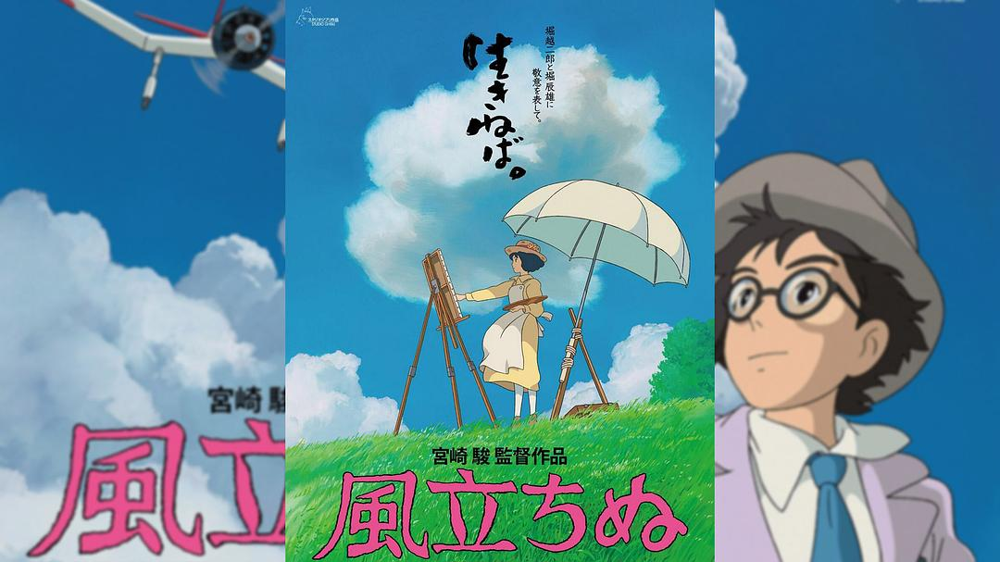
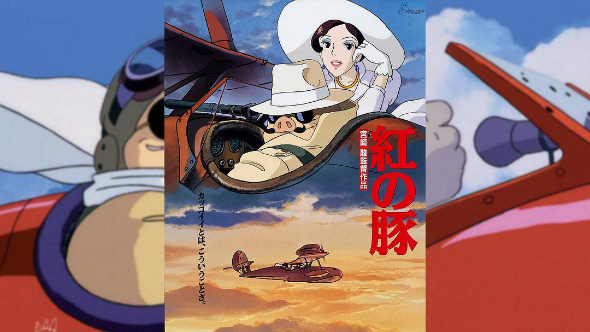

1. 哈尔的移动城堡
《哈尔的移动城堡》是宫崎骏执导的动画电影，改编自英国作家戴安娜·温尼·琼斯的同名小说。电影讲述了一个年轻女孩苏 Sophie 被巫女变成老妇人后，跟随一位神秘的流浪魔法师哈尔的故事。
 







《哈尔的移动城堡》是宫崎骏执导的动画电影，改编自英国作家戴安娜·温尼·琼斯的同名小说。电影讲述了一个年轻女孩苏 Sophie 被巫女变成老妇人后，跟随一位神秘的流浪魔法师哈尔的故事。
《幽灵公主》是宫崎骏执导的奇幻动画电影，讲述了人类与自然的冲突以及主角阿席达卡与幽灵公主萨尔的故事。影片深刻探讨了人与自然之间的复杂关系。
《哈尔的移动城堡》是宫崎骏执导的动画电影，改编自英国作家戴安娜·温尼·琼斯的同名小说。电影讲述了一个年轻女孩苏 Sophie 被巫女变成老妇人后，跟随一位神秘的流浪魔法师哈尔的故事。